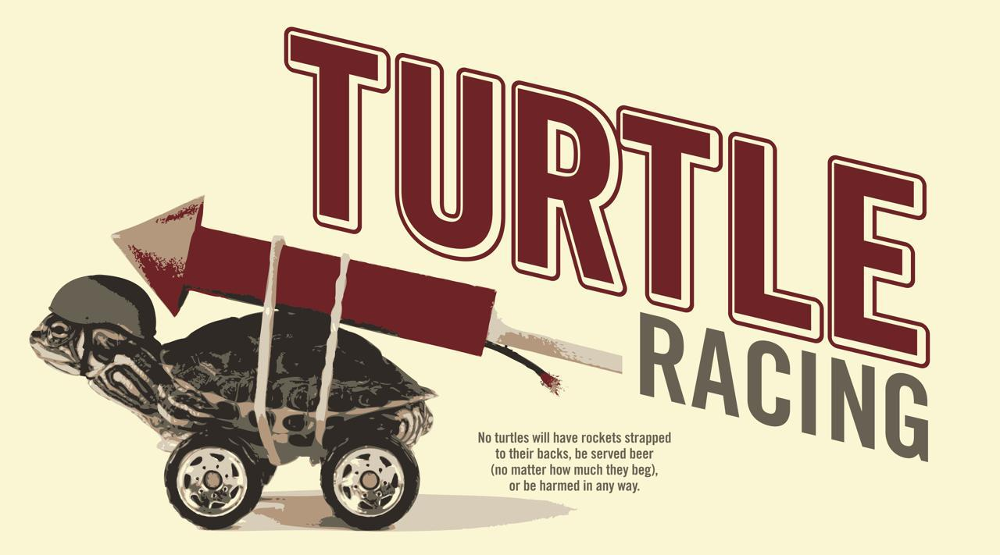
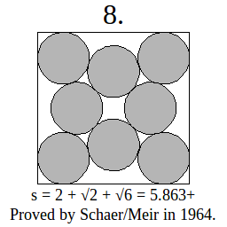

Comparing circle packing algorithms ...
{kind=link}
Systems that undergo jamming constitute systems with very complex energy landscapes, making comparison of jamming algorithms difficult. In the case of jamming, 'the jammed state' has a multiplicity of definitions [cite Torquato]; the properties and configurations of this state are highly sensitive to the dynamics of preparation and the criterion for full jamming.
Circle packing, while also associated with rough energy landscapes, provides a more straightforward criterion for algorithm performace: the optimally packed configuration for N circles is that which allows no higher density packing without circle overlaps. However, proved optimal packings are only known for the first few values of N; and the roughness of the energy landscape means that for higher values of N, an algorithm that finds the highest density packing yet known with the least computational work might still be stuck in a local minimum of the energy landscape, and be inferior to an algorithm that would take longer, but find a higher density.
In order to facilitate comparsion of packing and jamming algorithms, we therefore focus our study on circle packing problems with proved optimal solutions. While the relative performance of various algorithms is not guaranteed to generalize from this testbed to other jamming problems (or even to circle packings of larger N), this restriction may elucidate some of the ways in which algorithm performance depends on properties of the system (e.g., the degeneracy of optimal packings).

Below we focus on some measures of relative algorithm performance: primarily, they compare the evolution of the density of the system with computational work. We also look at a proxy for the ability of the algorithm to search through configuration space: the mean squared displacement of particles after a given amount of computational work.
All data below are for the simulated annealing algorithm; replica exchange (parallel tempering) will follow soon. Ultimately, a proper comparsion of these approaches will rely on a particular conception of 'parallel computational work', to be defined later.
- Density vs. sweep #:
- Density vs. pressure:
- Highest Density vs. sweep #:
- Highest Density vs. pressure:
{kind=link}
{kind=link}
{kind=link}